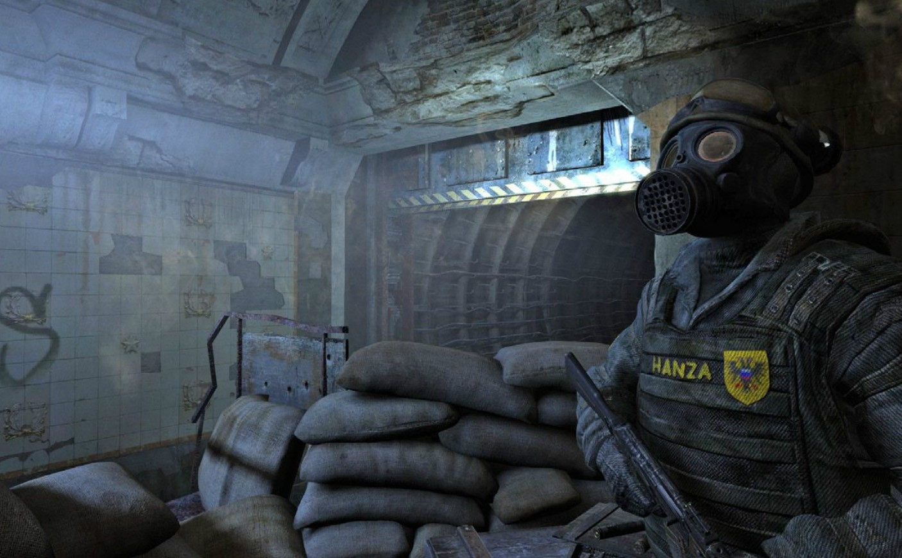

•Ганза• |
|---|
|
Крупнейшее государство Московского метрополитена, по своим повадкам приближенная к Западу. Является самым богатым и одним из самых влиятельных. Это то место, где общественный транспорт, водопровод и электрическое освещение широко распространены. Живёт в основном за счёт торговли и взимания пошлин с торговцев, желающих пересечь кольцо. Постапокалиптическое сообщество московского метро образовано независимыми станциями и могущественными фракциями. После долгих лет жестокой гражданской войны между фашистами Рейха и коммунистами Красной линии, наиболее могущественной группировкой стала Ганза, объединяющая станции Кольцевой линии. Часть своих огромных ресурсов Ганза потратила на восстановление боевой мощи Ордена спартанцев, поддерживающего мир в Метро, заключив таким образом союз с этой элитной силой... На момент 2033 года Ганза находится всё также в богатом и влиятельном положении. Через её станции действует регулярное сообщение, ходят грузовые и пассажирские караваны. В ноябре ганзейцы собирались аннексировать станции за Проспектом Мира, но образовавшееся к тому времени тамошнее Содружество во главе с ВДНХ помешала дальнейшему захвату территорий. В том же месяце началась эвакуация жителей тамошних станций из-за участившихся на ВДНХ нападений Чёрных. Было также принято решение о подрыве туннелей к Рижской, но всё решилось благополучно по причине уничтожения группой Мельника улья мутантов в Ботаническом саду. |